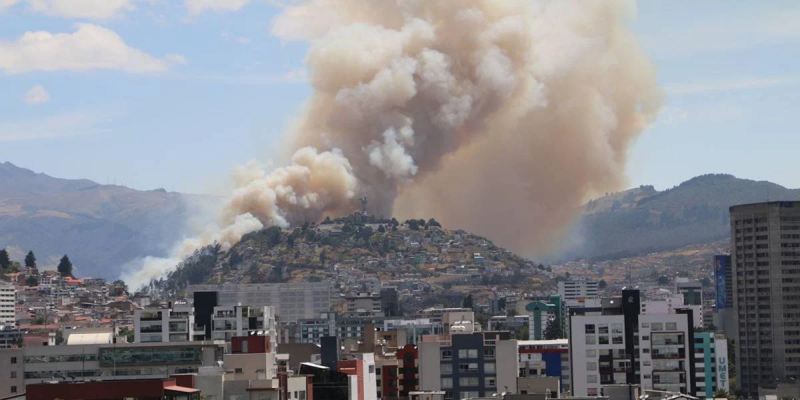

Bienvenidos a mi blog
Este blog fue creado con la finalidad de compartir varios de los efectos negativos que dejaron o pueden dejar los incendios forestales en la ciudad de Quito.
Todo lo expuesto en este blog va con la intencion de tratar de explicar cómo los incendios forestales suelen impactar a una ciudad desde una perspectiva general.
